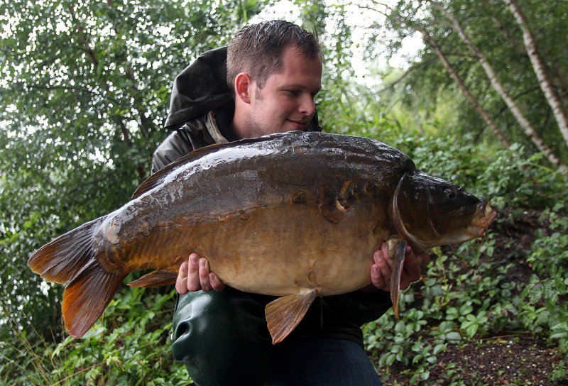
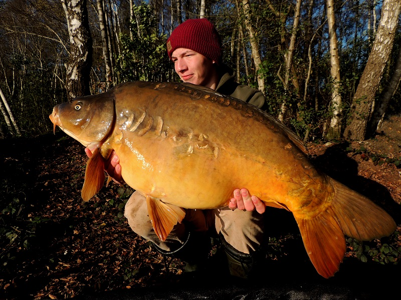
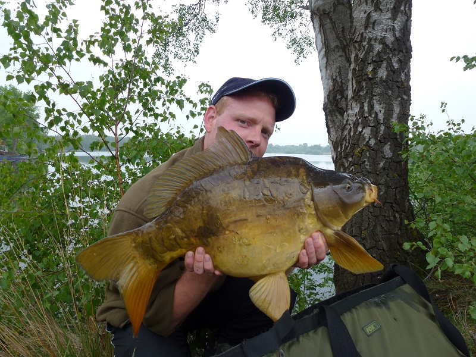
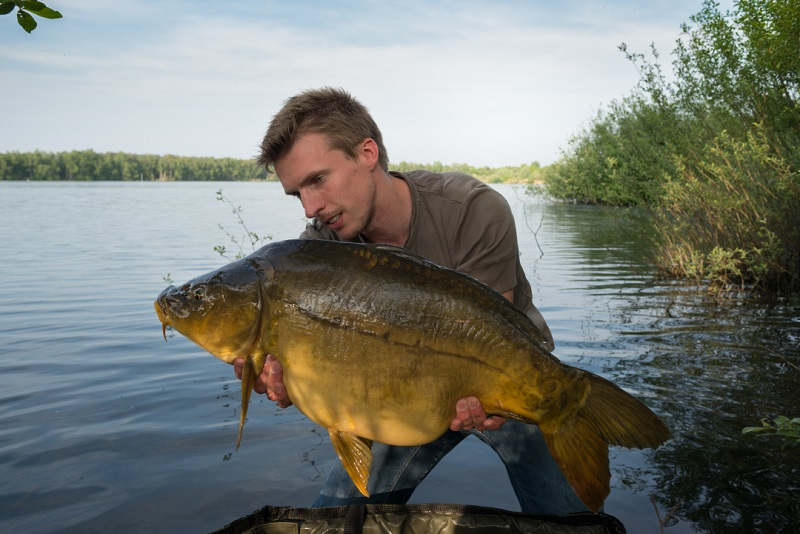
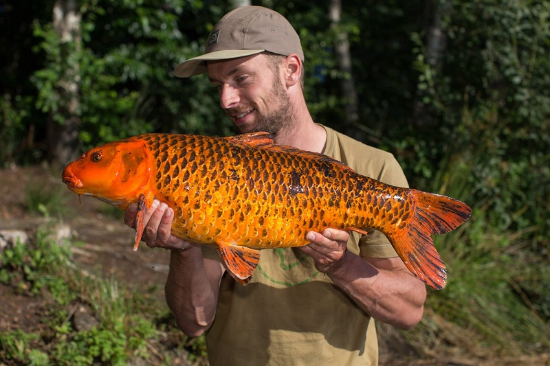

VC De Meeren
Karperbestand
De prominente bewoners van ons water — elk met hun eigen naam en verhaal.
VC De Meeren
De prominente bewoners van ons water — elk met hun eigen naam en verhaal.
Zoals jullie weten beschikt het clubwater over een prachtig bestand aan karper. Toen er in 2004 voor het eerst gevist en gevangen werd, is er een bestand aangelegd. In de afgelopen jaren zijn er regelmatig karpers terug gevangen. Het herkennen van vis heeft uiteindelijk geresulteerd in een aantal namen voor deze prominente bewoners.
Gemiddeld gewicht: 10 kg (2023) — Zwaarste vis: 24 kg (2021)










Neem contact op voor informatie over vergunningen en beschikbaarheid.
Neem contact op